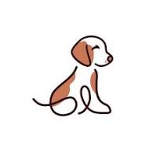
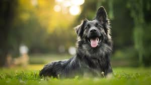

Veliki psi
Mali psi
Srednji psi
Zašto morate imati pas
Psi su za ljude idealno društvo jer njihov izgled i ponašanje u nama budi i potiče pozitivne emocije.
Ljudi se vole s psima igrati, šetati, maziti ih i hraniti. Osim toga, znanstveno je dokazano da kućne životinje,
a osobito pas, pozitivno djeluju na zdravlje ljudi jer kontakt s njima smanjuje stres, krvni tlak
i otkucaje srca te pojačava lučenje hormona sreće. Saznajte više.
Udomi psa
